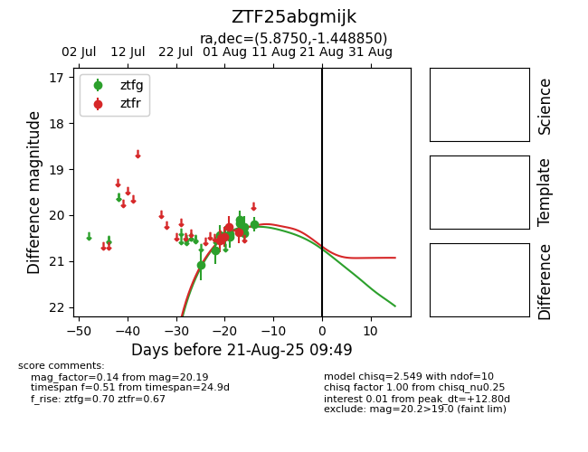

Target ZTF25abgmijk at 2025-08-21 09:49, see:
FINK: fink-portal.org/ZTF25abgmijk
Lasair: lasair-ztf.lsst.ac.uk/objects/ZTF25abgmijk
ALeRCE: alerce.online/object/ZTF25abgmijk
alt names
ZTF25abgmijk (ztf,alerce)
coordinates:
equatorial (ra, dec) = (5.8750,-1.44885)
galactic (l, b) = (107.1447,-63.46101)
photometry
last ztfg=20.19, ztfr=20.38
11 ztfg, 4 ztfr detections
